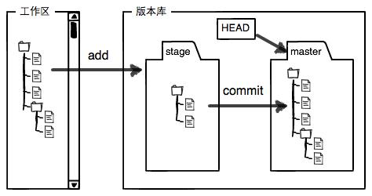
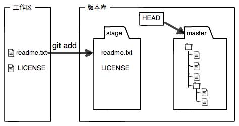
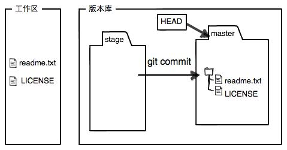
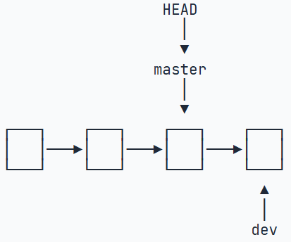
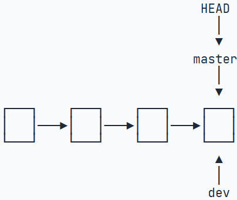
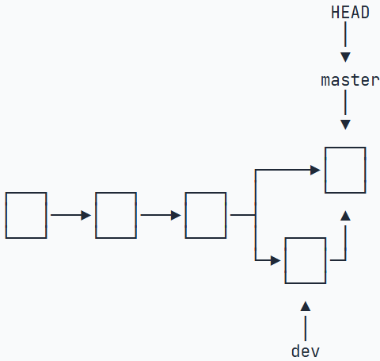

Git基础
配置 Git
设置用户名和邮箱；
1 | $ git config --global user.name "<Your Name>" |
注意：git config命令的--global参数，用了这个参数，表示你这台机器上所有的 Git仓库都会使用这个配置，当然也可以对某个仓库指定不同的用户名和 Email 地址。
创建版本库
版本库即仓库（Repository）【本地的一个目录文件夹】；该目录下的所有文件都可以被 Git 管理，每个文件的修改、删除，Git 都能跟踪，以便任何时刻都可追踪历史，或还原；
在一个目录（eg：learngit 目录）中执行git init命令可把该目录变为 Git 可管理的仓库；会在当前文件夹自动创建.git目录，该目录是 Git 来跟踪管理版本库的；
（版本控制系统主要是跟踪文本文件的改动，eg：txt 文件、网页、所有程序代码等）
将一个文件放入 Git 仓库只需要两步：eg：添加 readme.txt 文件
git add 告诉 Git ，把文件添加到仓库；git commit告诉 Git ，把文件提交到仓库；
1 | git add readme.txt # 后面跟需要添加的文件 |
版本穿梭
git status 仓库的当前状态；git diff 查看对应文件的具体修改信息（对比区别）；
版本回退
git log 查看每次提交的版本（显示从最近到最远的提交日志）；可添加参数 --pretty=oneline 更简洁的查看；
1 | git log --pretty=oneline |
HEAD^ 上一个版本，HEAD^^上上一个版本，可以写成HEAD~100往上 100 个版本；
git reset 回退命令；跟参数：--hard 回退到上个版本的已提交状态，--soft 回退到上个版本的未提交状态，--mixed 回退到上个版本未添加状态。
1 | git reset --hard HEAD^ |
回退后 git log 中则看不到刚才那个版本；若想再回到刚才的版本，找到对应的commit id，再次使用 git reset；若忘记了对应的 ID ，通过 git reflog 记录每一次命令可查看；
1 | git reset --hard 1094a # ID号可以不完整，Git会自动寻找（但为避免多个版本重ID，尽量完整） |
工作区&暂存区
learngit 目录即工作区；.git目录即版本库，里面有暂存区，master 分支，和指针 HEAD；
Git 自动为我们创建了一个 master 分支；

git add 把文件添加到暂存区；git commit 提交更改，把暂存区的所有内容提交到当前分支；
新建 LICENSE 文件，运行 git add；git commit；


git diff HEAD -- readme.txt 查看工作区和版本库里最新版的区别；
撤销修改
git checkout -- readme.txt 把文件在工作区的修改全部撤销；撤销的两种情况：
readme.txt自修改后还没有被放到暂存区，撤销修改就回到和版本库一模一样的状态；readme.txt已经添加到暂存区后，又作了修改，撤销修改就回到添加到暂存区后的状态。即让这个文件回到最近一次
git commit或git add时的状态。
git reset HEAD <file> 把暂存区的修改撤销掉，重新放回工作区；
删除文件
若文件已经提交到版本库，手动删除工作区的文件后，需要通过git rm test.txt来删除版本库中对应的文件；并重新提交`git commit -m “remove test.txt”；
若是手动删错了文件，也可通过刚才提到的git checkout -- test.txt从版本库中还原出来至工作区；
分支管理
创建&合并分支
创建dev分支，然后切换至dev分支：git checkout -b dev <==> git branch dev & git checkout dev；（-b创建并切换）
最新版本 Git 提供
git switch来切换分支；
git switch -c dev创建并切换到dev分支；
git switch master直接切换到master分支；
git branch 查看所有分支；标*即当前分支；
修改 readme.txt 文件并提交后，切换回master分支git branch master，此时readme.txt 文件内容并没有修改；（因为分支不同的原因）
git merge dev 将dev分支工作成功合并到master分支上；git merge合并指定分支到当前分支；
默认
git merge dev合并是使用Fast-forward快进模式 进行合并的；直接把 master 指向 dev ；
可强制禁用Fast forward模式，Git 会在 merge 时生成一个新的 commit；git merge --no-ff -m "merge with no-ff" dev因为会生成新的 commit，所有要-m
删除分支
git branch -d dev 删除 dev 分支；
如果要丢弃一个没有被合并过的分支，可以通过git branch -D <name>强行删除；
查看分支合并情况
当在不同分支修改同一文件中的同一段内容并提交时，合并分支时会出现问题，并且会将不同分支同一段内容在该文件中标识出来，此时需手动对其进行修改并重新提交，再删除多余的分支即可；
1 | # 带参数的git log查看分支合并情况 |
储藏工作现场
git stash 将当前工作现场“储藏”起来，等以后恢复现场后继续工作；（正在 dev上进行工作，但是发现master上有 BUG 需进行修改，但暂时不想讲dev分支提交仅对其工作现场进行临时保存）
git stash list 查看刚才所储藏的工作现场；
git stash apply恢复，git stash drop删除 stash 中的内容；git stash pop恢复的同时删除；
1 | git stash list |
git cherry-pick <commit ID> 将复制一个特定的提交到当前分支；（master 分支上修复 BUG 后，避免重复劳动，可将其修改复制到当前分支）
远程仓库
GitHub 创建新的仓库；通过 Git 将其与本地仓库相关联；
1 | git remote add origin git@github.com:username/learngit.git |
远程库的名字就叫 origin（可以理解为git@github.com:username/learngit.git 的别名），Git 默认的叫法，可改别名。
推送&抓取分支
本地仓库的所有内容推送至远程仓库git push -u origin master；git push把当前分支master推送到远程；
由于远程库是空的，我们第一次推送
master分支时，加上了-u参数，Git不但会把本地的master分支内容推送的远程新的master分支，还会把本地的master分支和远程的master分支关联起来，在以后的推送或者拉取时就可以简化命令git push origin master。
git push origin master、git push origin dev……
默认 clone 只能看到本地的 master 分支；若想在 dev 分支上修改，必须创建远程origin的dev分支到本地；git checkout -b dev origin/dev；
若两个人都对 dev 分支中同样的文件做了修改，则 push 时会报错（发生冲突），此时需要先git pull将最新的提交从origin/dev抓下来，在本地合并解决冲突再推送即可；
git pull失败，原因是没有指定本地dev分支与远程origin/dev分支的链接，根据提示，设置dev和origin/dev的链接：git branch --set-upstream-to=origin/dev dev；然后再 pull ；
删除远程库
git remote -v 查看远程库详细信息（若没有推送权限则看不到 push 的地址）；git remote rm <name>；（解除了本地和远程的绑定关系，并非真正删除）
Rebase
git rebase
rebase 操作的特点：把分叉的提交历史“整理”成一条直线，看上去更直观。缺点是本地的分叉提交已经被修改过了。
关联多个远程仓库
一个本地仓库关联多个远程仓库；
1 | git remote rm origin # 删除已有关联 |
标签
tag 简单理解为某一个 commit 版本；（只不过起了一个容易记住的名字，且不能移动）
创建
git tag <name>打一个新的标签；（默认在最新提交的 commit 上打标签）
git tag <name> <commit ID> 在指定 commit 上打标签；
git tag -a v0.1 -m "version 0.1 released" <commit ID> 创建有说明的标签，-a指定标签名，-m指定说明文字；git show <tagname>可以看到说明文字
推送
创建的标签只存储在本地，到远程仓库，标签也需要单独推送git push origin <tagname>；或直接推送所有未推送的本地标签git push origin --tags；
删除
git tag -d v0.1 删除本地标签；
若标签已推送至远程，删除则需要先本地删除，再远程删除：
1 | git tag -d v0.9 |
git tag查看所有标签；（按字母顺序列出，而不是时间顺序）
注：标签总是和某个commit挂钩。如果这个commit既出现在master分支，又出现在dev分支，那么在这两个分支上都可以看到这个标签。
自定义 Git
git config --global color.ui true让 Git 显示颜色；
忽略特殊文件
将某些文件放到 Git 工作目录，而不提交它；
在工作目录创建.gitignore文件，将要忽略的文件名填进去，Git 会自动忽略这些文件；
注：
.gitignore文件本身应该提交给Git管理，这样可以确保所有人在同一项目下都使用相同的.gitignore文件。
忽略文件的原则是：
- 忽略操作系统自动生成的文件，比如缩略图等；
- 忽略编译生成的中间文件、可执行文件等，也就是如果一个文件是通过另一个文件自动生成的，那自动生成的文件就没必要放进版本库，比如Java编译产生的
.class文件；- 忽略你自己的带有敏感信息的配置文件，比如存放口令的配置文件。
若文件被.gitignore所忽略了，可以用-f参数，强制添加到 Git；git add -f App.class；
git check-ignore -V App.class检查哪个规则导致该文件被忽略；
eg：.*将.gitignore也排除在外，*.class将App.class也排除在外，但此时不想破坏规则还想将文件不被排除，可以设置：
1 | # 排除所有.开头的隐藏文件: |
一个Git仓库也可以有多个.gitignore文件，.gitignore文件放在哪个目录下，就对哪个目录（包括子目录）起作用。
1 | myproject <- Git仓库根目录 |
不需要从头写
.gitignore文件，GitHub已经为我们准备了各种配置文件，只需要组合一下就可以使用了。所有配置文件可以直接在线浏览：GitHub/gitignore。可以通过GitIgnore Online Generator在线生成
.gitignore文件并直接下载。
配置别名
给 Git 命令配置别名
1 | git config --global alias.st status # git status => git st |
--global对当前用户起作用，不加，则只对当前仓库起作用；配置文件在
.git/config中；别名在[alias]后，若要删除别名，删除该行即可；
PS：
Git 跟踪并管理的是修改，而非文件；
Git 对分支的操作
以指针的形式进行操作；HEAD 指针所指向的可以理解为当前分支，每次创建、切换、合并、删除等操作都是通过修改指针来实现的；

例如这里的两个分支 master 和 dev ，当前分支为 master 分支；
Fast forward模式：

禁用Fast forward模式：

合并分支时，加上
--no-ff参数就可以用普通模式合并，合并后的历史有分支，能看出来曾经做过合并，而fast forward合并就看不出来曾经做过合并。
本地 Git 仓库和 GitHub 远程仓库传输
传输通过 SSH 加密；
需要的设置：
1 | ssh-keygen -t rsa -C "youremail@example.com" |
用户主目录生成 .ssh 目录，生成id_rsa私钥和id_rsa.pub公钥；
GitHub 打开 Account settings ，SSH Keys 页面，Add SSH Key，填写任意 Title，Key 文本框粘贴 id_rsa.pub 中的内容；
多人协作的工作模式
（通常如此）
- 首先，可以尝试用
git push origin <branch-name>推送自己的修改； - 如果推送失败，则因为远程分支比你的本地更新，需要先用
git pull试图合并； - 如果合并有冲突，则解决冲突，并在本地提交；
- 没有冲突或者解决掉冲突后，再用
git push origin <branch-name>推送就能成功！
如果git pull提示no tracking information，则说明本地分支和远程分支的链接关系没有创建，用命令git branch --set-upstream-to <branch-name> origin/<branch-name>。
搭建 Git 服务器
https://liaoxuefeng.com/books/git/customize/server/index.html
GUI 工具
学习原文：